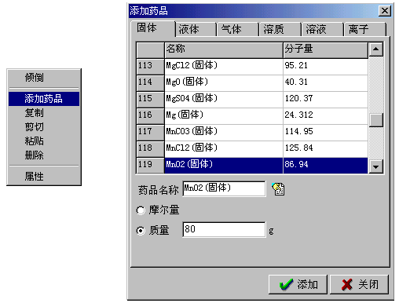
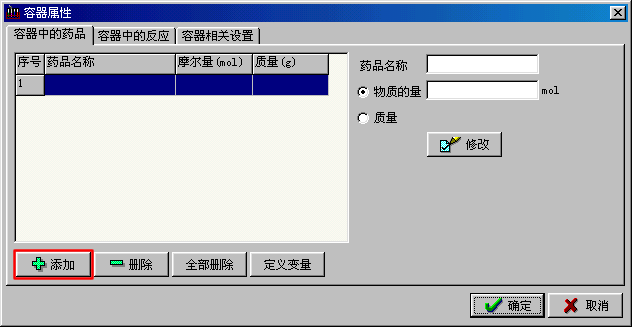

|
添加药品 我们以制取Cl2的实验为例，介绍如何往容器中添加药品和定义反应。用仿真化学实验室添加药品的一般方法是这样的：用鼠标右键点击需要加药品的容器，在弹出的菜单中点击“添加药品”，这时会弹出“添加药品”对话框。  在“添加药品”对话框中，我们把药品分成几类，分别是：固体、液体、气体、溶质、溶液、离子。其中固体指的是成固状的纯净物药品，例如CuO粉末，Zn粒。液体指的是液态的纯净物试剂，例如H2O。气体指的是气态的纯净物，例如：H2,CO2。溶质指的是处于溶解状态下药品，例如：溶解的NaCl。溶液是水和溶质的混合物。 例如：在烧瓶中，我们要添加MnO2(固体)，就在固体活页中寻找“MnO2(固体)”，或者在药品名称编辑框中输入MnO2或mno2(注：不用区分大小写)，然后按回车键，软件会帮助您找到对应的药品。再指定需要添加的量，您可以按mol量进行添加，也可以按质量进行添加。在这里我们按质量进行添加，添加80克，最后点击“添加”按钮就可以了。 您也可以从容器的属性窗体中添加药品。用鼠标右键点击需要添加药品的容器，在弹出的菜单中点击“属性”弹出“容器属性”对话框。在“容器中的药品”页中点击“添加”按钮也可以弹出“添加药品”对话框进行添加。  用类似的方法，我们在分液漏斗中添加40ml,12mol/L的HCl溶液。在烧杯中添加100ml,1mol/L的NaOH溶液。
|
南京金华科软件有限公司 025-4713252 025-4712155